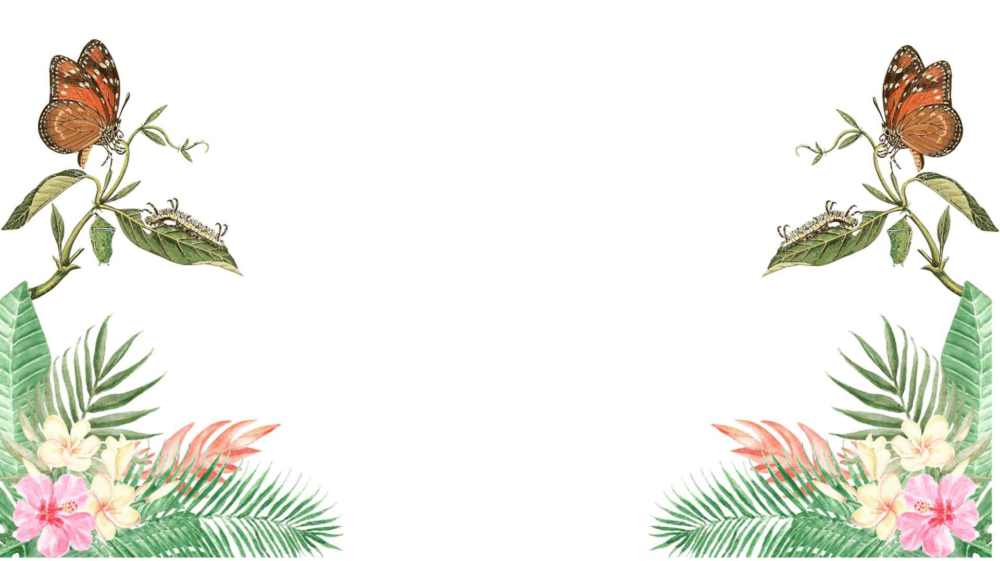
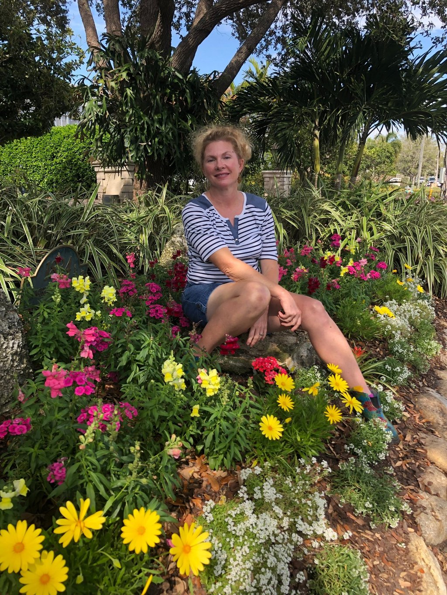

01
Consultation
We visit your property, listen to your vision, and recommend the right plants and materials for a sustainable, easy-care space.
Learn more
St. Petersburg, Florida
A woman-owned landscape design destination creating beautiful, low-maintenance, and resilient outdoor spaces with Florida-friendly plants that support local wildlife.
Welcome
Dirt Girls Garden Design is a woman-owned landscape design business based in southern Pinellas County. We have a passion for creating lovely outdoor spaces that coexist with the natural environment. We try our best to attract pollinators, conserve water, source everything as locally as possible, use only organic and natural products, and plant species that are tolerant of Florida's conditions (especially those that are native).
Storm-tolerant, low-maintenance Florida-native or Florida-friendly species chosen for the right place.
Flowers, shrubs, and trees that attract bees, birds, and butterflies.
Water-saving, organic, and locally sourced materials that protect the environment.

About the owner
Dirt Girls Garden Design is a woman-owned business dedicated to maintaining beautiful outdoor spaces while preserving and protecting nature. With a deep understanding of the importance of sustainability, our team takes a thoughtful and eco-friendly approach to every project.
We prioritize using organic and locally sourced materials, as well as implementing water-saving techniques and native plant species. Our skilled landscapers work diligently to create harmonious designs that seamlessly blend with the surrounding environment.
Look deep into nature, and then you will understand everything better. — Albert Einstein
Melanie
Founder, Dirt Girls Garden Design
How we work
From thoughtful design to sourcing, installation, and hardscaping, we make it easy to love your Florida yard. Our process moves through three simple steps.
01
We visit your property, listen to your vision, and recommend the right plants and materials for a sustainable, easy-care space.
Learn more02
Personalized landscape plans tailored to your property and lifestyle, with detailed plant lists and material recommendations.
Learn more03
Complete landscape implementation, from garden beds and borders to trees and premium mulch, all installed with care.
Learn more